Spatial Data Science
a very short introduction
Teknik Geodesi, Universitas Diponegoro
2025-05-27
Laboratorium Departemen Teknik Geodesi - UNDIP
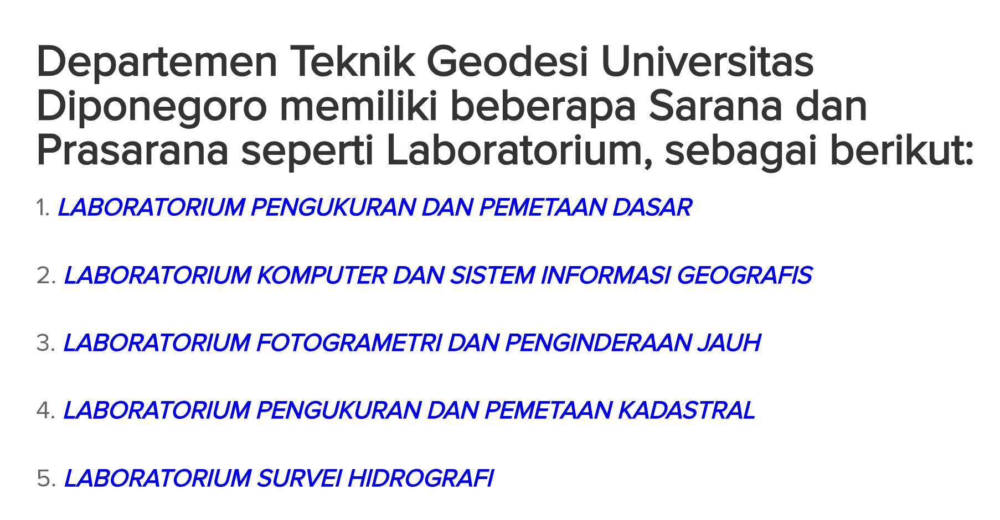
Spatial Data Science laboratorium is a research laboratory, established to accommodate multi-disciplinary research.
What is Science?
o
/|\
/ \Science is basically building testable explanations about the universe!
Also, it’s about finding general truths through experiments.
You know, avoiding that pesky correlation vs causation thing.
Science: The Official Definition
Science (Wikipedia): A systematic enterprise that builds and organizes knowledge in the form of testable explanations and predictions about the universe
Science (Webster): Knowledge covering general truths of the operation of general laws, especially as obtained and tested through scientific method
Key Point: Experimentation is crucial to establish causal relationships (avoiding the correlation fallacy)
Data Science: The Ultimate Mashup
Data Science: An interdisciplinary field about processes and systems to extract knowledge or insights from data in various forms
Historical note: Computer Science = Data Science (Naur, 1960); Statistics = Data Science (Wu, 1997)
We focus on correlation rather than causality.
Because causality is hard, and we have deadlines.
Data Science is Multi-disciplinary
o o o o o o o
/|\ /|\ /|\ /|\ /|\ /|\ /|\
/ \ / \ / \ / \ / \ / \ / \
DB Big Stats ML Mining Viz Domain
DataThe seven core areas that make data scientists cry:
- Database 2. Big Data Systems 3. Statistics 4. Machine Learning
- Data Mining 6. Data Visualization 7. Application Domain Knowledge
Spatial Data Science: Geography Strikes Back!
Spatial Science + Data Science
| |
v v
┌─────────────────────────────┐
│ Spatial Data Science! │
│ │
│ • GIS │
│ • Spatial DBMS │
│ • Spatial Big Data │
│ • Spatial Analytics │
│ • MAUP │
│ • Topology │
│ • Map Projections │
│ • Spatial Autocorrelation │
└─────────────────────────────┘The Key Difference
Spatial Data Science: An interdisciplinary field that extracts knowledge AND causal relationships of spatial phenomena from spatial and other data in various forms
Revolutionary insight: Focus equally on correlation AND causality!
Data Scientist vs Spatial Data Scientist
o
/|\
/ \Data Scientist
“These variables correlate!”
o
/|\
/ \Spatial Data Scientist
“These variables correlate AND I know exactly WHERE!”
The Spatial Anxiety List
What Keeps Spatial Data Scientists Awake:
• GIS Integration Issues
• Spatial Database Management
• Spatial Big Data Processing
• MAUP (Modifiable Areal Unit Problem)
• Topology Nightmares
• Uncertainty Quantification
• Map Projection Disasters
• Coordinate System Conflicts
• Spatial Autocorrelation Mysteries
o
/|\ *nervous sweating*
/ \Real-World SDS Problems
🚗 Urban Traffic Where are the bottlenecks?
🏥 Healthcare Disease outbreak mapping
🗳️ Politics Electoral pattern analysis
📊 Business Intelligence Market optimization
🏙️ City Operations Resource allocation
💧 Hydrology Water flow modeling
🌋 Disaster Planning Risk assessment
🚨 Emergency Services Response optimization
Real-World SDS Example: Peat Distribution
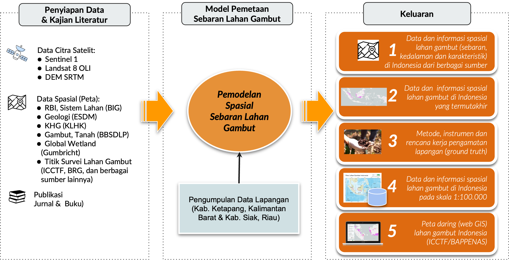
Real-World SDS Example: Peat Distribution
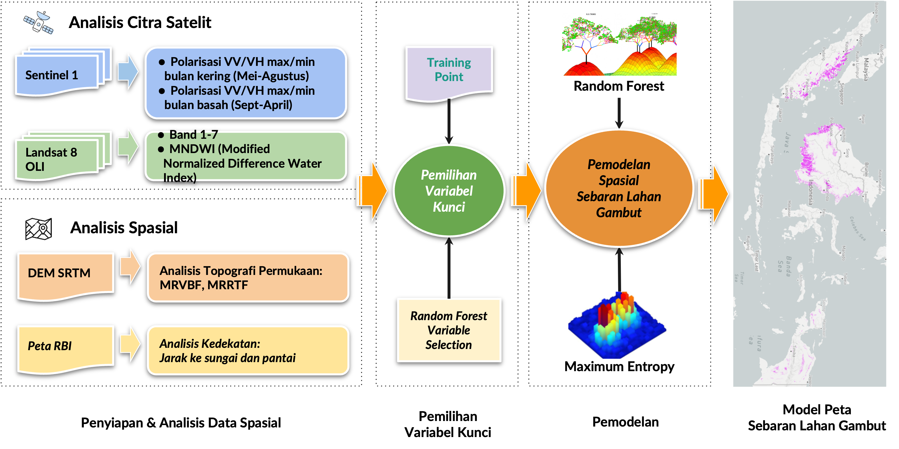
Real-World SDS Example: Peat Distribution
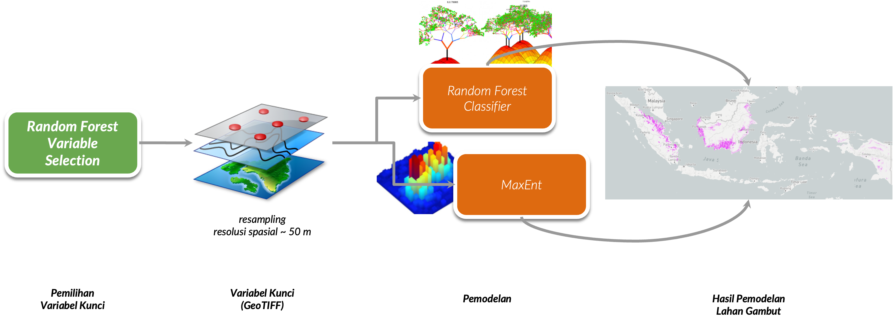
Real-World SDS Example: Peat Distribution
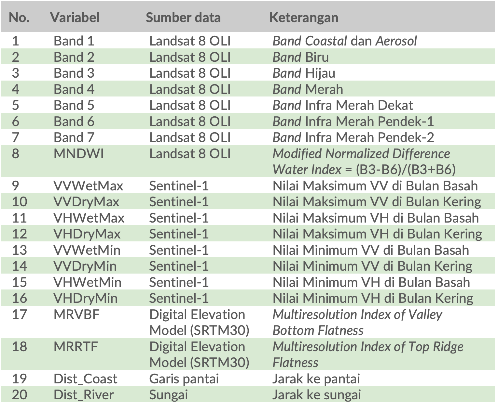
Real-World SDS Example: Peat Distribution
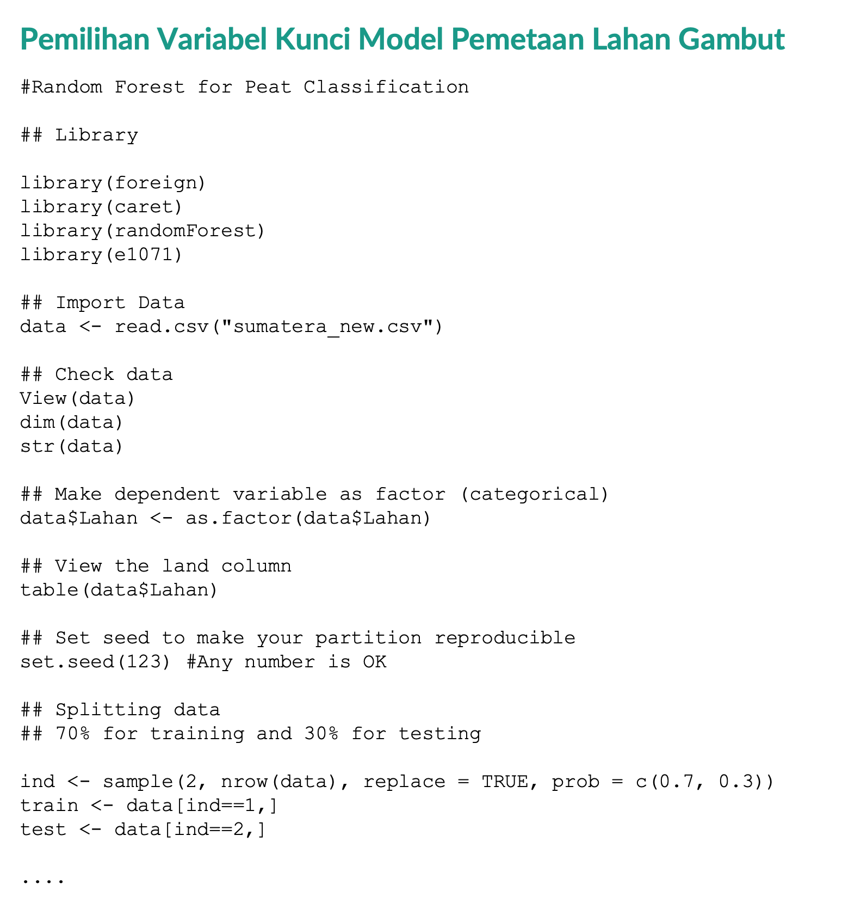
Real-World SDS Example: Peat Distribution
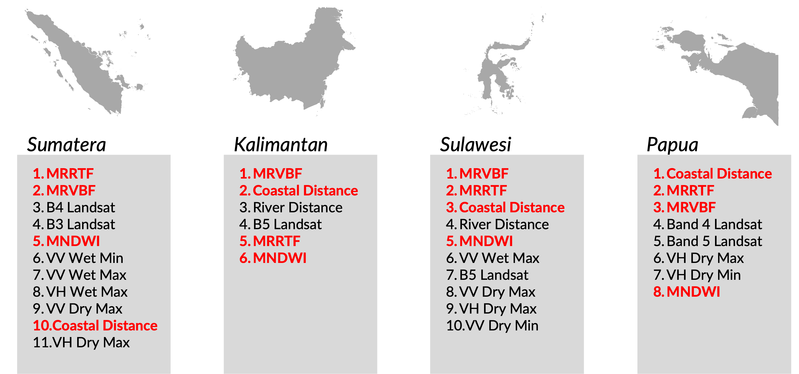
Real-World SDS Example: Peat Distribution
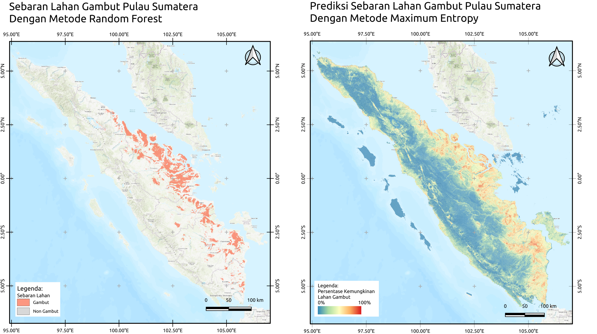
Real-World SDS Example: Peat Distribution

Here’s spatial data science in action! Random Forest vs Maximum Entropy models predicting peat distribution in Kalimantan, Indonesia.
Notice how we’re not just finding patterns - we’re mapping them with precision AND testing different prediction methods!
Real-World SDS Example: Peat Distribution
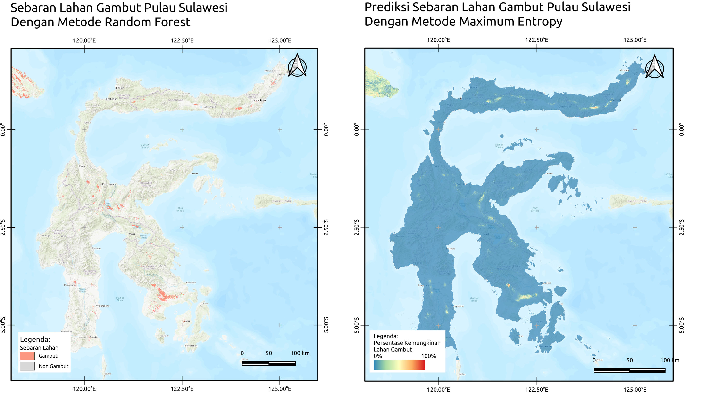
Real-World SDS Example: Peat Distribution
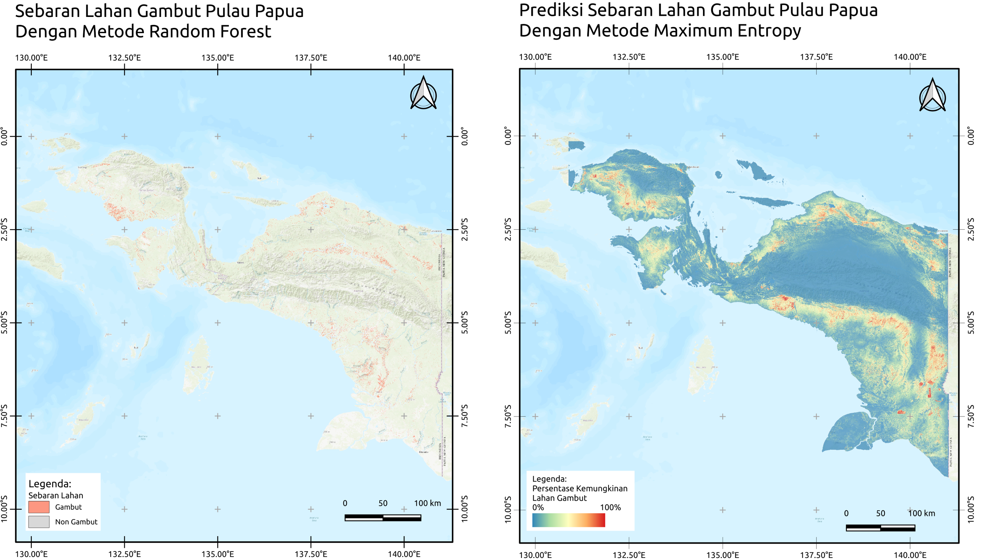
Real-World SDS Example: Peat Distribution
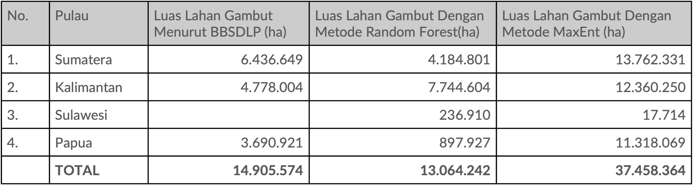
Real-World SDS Example: Peat Distribution
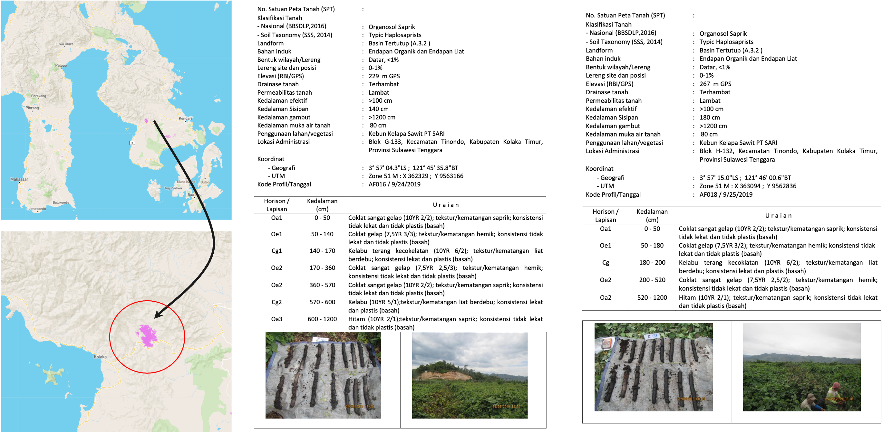
Real-World SDS Example: Integrated Digital Monitoring for Agriculture
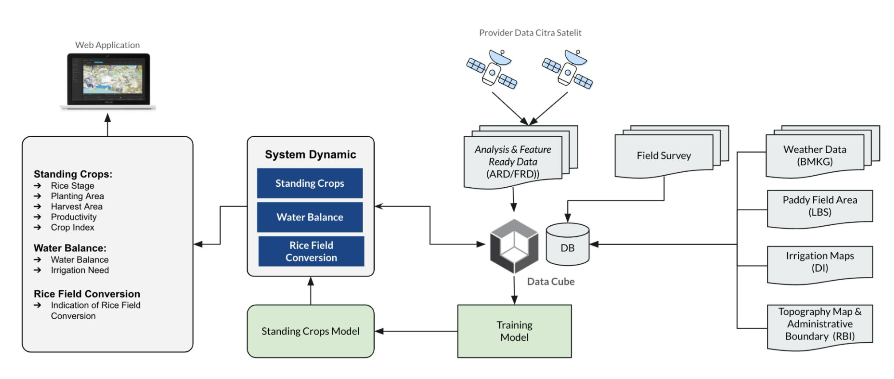
Real-World SDS Example: Integrated Digital Monitoring for Agriculture

Thesis: DESAIN WEBGIS PREFERENSI PEMILIH PEMULA PADA PEMILU 2024 (Maria Natasha, 2024)
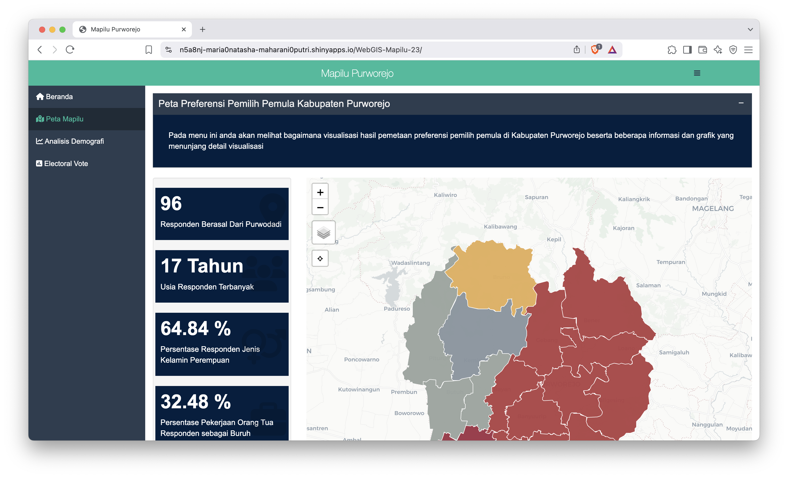
Thesis: DASHBOARD WEBGIS DEMOGRAFI KOTA SEMARANG MENGGUNAKAN MAPBOX GL JS (Yakub Hariana, 2024)
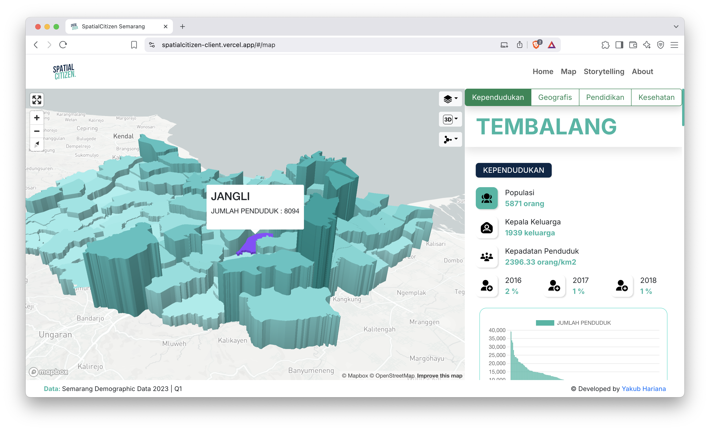
Thesis: PEMODELAN SPASIAL-TEMPORAL DEMAM BERDARAH DENGUE (DBD) DI KABUPATEN JEPARA BERBASIS SISTEM INFORMASI GEOGRAFIS (Sekar Arum Kusuma Dewi, 2024)
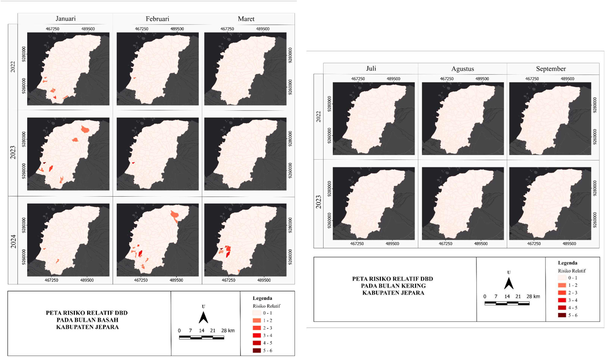
Thesis: PEMETAAN KERAWANAN KEBAKARAN LAHAN GAMBUT BERBASIS MACHINE LEARNING (Nindia Priscilla, 2024)
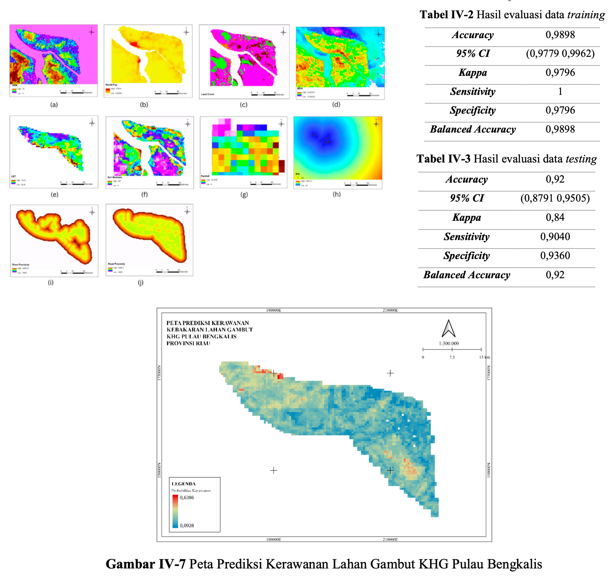
Thesis: RANCANG BANGUN WEBMAP KEMACETAN LALU LINTAS MENGGUNAKAN DATA AREA TRAFFIC CONTROL SYSTEM (Intan Nurul Fallah and Fayruz Zahira Taqiyya, 2025)


The Four Pillars of Spatial Data Science
1. GIS (Geographic Information System)
The old reliable friend
2. Spatial DBMS (Spatial Database Management)
Where spatial data lives
3. Spatial Data Analytics
The fancy math that scares people
4. Big Data Systems
For ALL the maps of ALL the things
Plus: Domain Knowledge
Application Domain Knowledge
Because knowing WHERE something happens is useless if you don’t know WHAT it means
o
/|\ <- This person knows stuff
/ \The Bottom Line
Data Science: “I found patterns in your data!”
Spatial Data Science: “I found patterns in your data, AND I can show you exactly where they are on a map, AND I can tell you why location matters, AND I can predict what will happen in other places!”
Also, I have nightmares about coordinate systems.
Summary Comparison
| Aspect | Data Science | Spatial Data Science |
|---|---|---|
| Focus | Correlation | Correlation + Causality |
| Data | Any format | Spatial + Other formats |
| Questions | What patterns? | Where + Why patterns? |
| Complexity | High | Higher (+ spatial) |
| Sleep Quality | Poor | Worse (coordinate nightmares) |
Thank You!
o
/|\ <- This person knows spatial data science!
/ \Questions about spatial data science? Want to collaborate on mapping projects?
Drop me a line! I promise I won’t bore you with coordinate system details… much.
:::
:::
:::
Get in Touch!
🌐 Website: www.sigro.id
🐦 Twitter: @jalmiburung
📧 Email: firmanhadi21@lecturer.undip.ac.id
🏛️ Institution: Teknik Geodesi, Universitas Diponegoro
Resources & Final Thoughts
For Data Science: Any of the 47,000 available textbooks
For Spatial Data Science: Pray and check your coordinate systems
For Sanity: Consider quantum physics instead
No actual spatial autocorrelation was harmed in making this presentation
Warning: Spatial Data Science may cause existential crises about the nature of space and time
Side effects may include: map projection obsession, compulsive “but where?” questioning, and 3 AM coordinate system panic attacks
🌐 www.sigro.id | 🐦 @jalmiburung